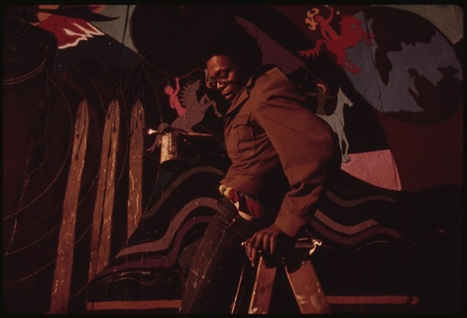

imgdips.js
Replace images on high DPI screens with high resolution alternatives based on
device-independent-pixel (dips) ratios. The current device pixel ratio is
normalized to a ratio name which is used as a file suffix or data-* attribute.
It takes a slightly different approach to some other libraries:
-
JavaScript image objects are used to check for alternate images, rather than Ajax requests. This ensures everything works cross-domain (like when your images are on a CDN).
There are also caching advantages over making an Ajax HEAD request. The HEAD request gets a quicker response, but if the image exists it needs another HTTP request to load the image and the same time to wait for it to load, so this isn't really an advantage. By using image objects the response (should) be cached, so only one HTTP request is needed.
Multiple ratio names can be mapped to different minimum device pixel ratios. Not only does this make testing on low DPI devices a bit easier it also future-proofs against the time when we need to support @2x, @4x and @8x images :)
It doesn't mention any Apple marketing terms like "retina screens". Damn.
Usage
Include the script however you prefer, then when the DOM is ready:
ImgDips.init(options);
By default it will attempt to replace the src for all img tags with the
class dips when the window.devicePixelRatio is greater than 1.5 by adding
the file suffix @2x. Your images should have width and height attributes.
You can also set the hi-res image URL with a data-2x attribute.
Note you don't have to wait until the DOM has fully loaded as there is no
dependence on other libraries and the initial images don't have to be loaded.
Running this script just before you're closing BODY tag should work (unless
other scripts add more images).
If any other script wants to access the currently used ratio name, for example a gallery that loads images dynamically, it can do:
var suffix = ImgDips.getRatioName();
Or it can check the body tag's data-dips-ratio-name, for example with jQuery:
var suffix = $('body').data('dips-ratio-name');
Options:
{
// Image CSS selector
selector: '.dips',
// Normalize names to pixel ratios, the highest matched ratio will win
devicePixelRatioNames: {
'@2x': 1.5,
'@4x': 3,
'@8x': 6
}
}
In this case the alternate data attributes available would be data-2x,
data-4x and data-8x.
Changing ratio names may change the alternate data attributes available. The
attribute name is based on the ratio name with all non-alphanumerics removed. So
@2x, _2x and -2x would all map to data-2x. But @2times would map to
data-2times.
Example
This image should be replaced with a hi-res image depending on the minimum device pixel ratio you choose below (default on load is 1.5, use 1 to see the effect on low-res devices):

License
Copyright 2013 Paul Willoughby
Licensed under the MIT License